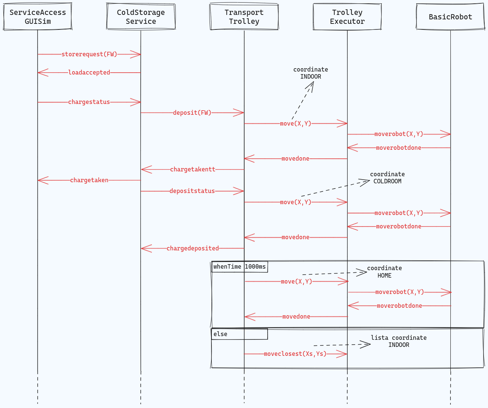

Introduction
All'interno di questo Sprint verrà analizzato il core-business dell'applicazione, esplicitato nello Sprint0 come l'interazione tra ColdStorageService (CSS) e TransportTrolley (TT).
Requirements
Descrizione requirements a questa pagina
- Definire con precisione i componenti dell'applicazione, limitandosi al contesto di CSS e TT
- Formulare il modello di interazione tra ColdStorageService e TransportTrolley
L'interazione tra TT e basicRobot è essenziale per il funzionamento del core-business e verrà trattata nel corso del documento.
Requirement analysis
Dal documento dei requisiti, relativamente a questo Sprint, consideriamo i seguenti argomenti da trattare:
- Service area
- basicRobot e TransportTrolley
- Interazione tra CSS e TT
Si riporta il risultato dell'analisi in Sprint0, si baserà la seguente analisi su questo modello.

Entità
Limitandosi al core-business dell'applicazione, riportiamo le sole componenti d'interesse presenti nel modello sopra definito.
- ServiceAccessGUI
- ColdStorageService
- TransportTrolley
- BasicRobot
KEY-POINT: ogni entità corrisponde ad un attore
Dati
Di seguito, sono elencati tutti i dati d'interesse per questo Sprint presenti nel documento dei requisiti, con annessa una breve descrizione.
| Dato | Tipologia | Descrizione |
|---|---|---|
| MAXW | Costante, float | Limite massimo di chilogrammi che la ColdRoom può contenere in un dato momento. |
| RD | Costante, intera | Lunghezza del lato del transport trolley. |
| FW | Variabile, float | Quantità di carico che un camion refrigerato deve depositare, espressa in chilogrammi. |
| TTState | Enumerativo | Tre valori che rappresentano i possibili stati in cui si puà trovare il transport trolley (in HOME, in movimento e fermo): HOME, MOVING, STOPPED |
| currentTTState | Variabile, enumerativo | Stato attuale del transport trolley, di tipo TTState |
Messaggi
Sono riportati i messaggi, presi sempre dal modello, che realizzano le interazioni tra le varie entità (esclusi quelli tra TransportTrolley e BasicRobot, che verranno analizzati in seguito).
| Mittente | Destinatario | Tipologia messaggio | Identificatore | Payload | Significato |
|---|---|---|---|---|---|
| serviceaccessgui | coldstorageservice | Request | storerequest | storerequest(FW) | Richiesta di storage di FW chili di cibo. |
| coldstorageservice | serviceaccessgui | Reply | loadaccepted | loadaccepted() | La richiesta di deposito è stata accettata. |
| coldstorageservice | serviceaccessgui | Reply | loadrejected | loadrejected() | La richiesta è stata rifiutata. |
| serviceaccessgui | coldstorageservice | Request | chargestatus | chargestatus() | Viene richiesto lo stato del carico depositato. |
| coldstorageservice | serviceaccessgui | Reply | chargetaken | chargetaken() | Il deposito è stato preso in carico dal transport trolley, il camion deve spostarsi da INDOOR. |
| coldstorageservice | serviceaccessgui | Reply | chargefailed | chargefailed() | Ci sono stati problemi durante la presa in carico del deposito. |
Ogni risposta è presente nella sua accezione di successo e di fallimento. Si discrimina quindi in base al messaggio e non all'argomento, in modo da gestire con maggiore flessibilità il passaggio tra i vari stati degli attori Qak.
Vediamo essere presente una semantica request-reply che comprende tutte le interazioni dalla ServiceAccessGUI al TransportTrolley, passando per il ColdStorageService.
In questo modello, gli unici messaggi che vengono inviati dalla ServiceAccessGUI sono:
- storerequest(FW), per la richiesta di deposito;
- chargestatus(), per la richiesta dello stato del carico;
questa decisione si basa sul fatto che in questo Sprint non verrà trattata la questione dei ticket.
KEY-POINT: semantica request-reply per le interazioni della core-business.
Modello dei requisiti
Definiamo il nuovo modello dei requisiti che fungerà da punto di partenza per la nostra analisi.
In aggiunta al modello iniziale, esplicitiamo la relazione TransportTrolley-BasicRobot. Dal documento dei requisiti viene esplicitato che il TT usa il DDR per realizzare il movimento.
TransportTrolley e DDR Robot
Il TransportTrolley è una entità che si interpone tra il BasicRobot e il ColdStorageService e offre operazioni di alto livello per effettuare un deposito, in particolare:
- prelevare un carico di cibo da INDOOR;
- depositare un carico prelevato ColdRoom;
- spostarsi da ColdRoom a HOME una volta completato il deposito;
Inoltre, questa entità deve essere in grado di comunicare all'esterno quando un carico viene prelevato; verrà discusso in analisi del problema se comunicarlo direttamente al componente interessato o al ColdStorageService, in vece di gestore del servizio.
Queste funzionalità condividono un requisito fondamentale: la possibilità di navigare la service area. A questo scopo, partendo dal modello formale presente nello Sprint0, verrà definita nei prossimi paragrafi una rappresentazione comprensibile al componente che controllerà il robot concreto.
Il DDR Robot sarà rappresentato da un robot virtuale, disponibile alla nostra software house, che offre una visualizzazione di un robot virtuale che naviga una service area virtuale.
MODELLI
Dai documento dei requisiti non emerge un modello univoco di interazione tra TransportTrolley e ColdStorageService, si propongono quindi due opzioni, verrà discussa in analisi del problema la scelta.
Opzione 1
Il ColdStorageService invia una istruzione di deposito generale e il TransportTrolley decide come gestire gli spostamenti
| Mittente | Destinatario | Tipologia messaggio | Identificatore | Payload | Significato |
|---|---|---|---|---|---|
| coldstorageservice | transporttrolley | Request | deposit | deposit() | Il CSS comunica al transport trolley che è presente un nuovo carico da depositare. |
| transporttrolley | coldstorageservice | Reply | chargetakentt | chargetakentt() | Il carico è stato prelevato dal transport trolley. |
Opzione 2
Il ColdStorageService invia istruzioni dettagliate di spostamento, TransportTrolley non prende decisioni a riguardo
| Mittente | Destinatario | Tipologia messaggio | Identificatore | Payload | Significato |
|---|---|---|---|---|---|
| coldstorageservice | transporttrolley | Request | toindoor | toindoor() | Il CSS indica al TT di muoversi a INDOOR e prelevare un carico. |
| transporttrolley | coldstorageservice | Reply | chargetakentt | chargetakentt() | Il carico è stato prelevato dal TT. |
| transporttrolley | coldstorageservice | Request | depositcharge | depositcharge() | Il CSS indica al TT di depositare il carico nella ColdRoom. |
| transporttrolley | coldstorageservice | Reply | chargedeposited | chargedeposited() | Il carico è stato depositato dal TT. |
| transporttrolley | coldstorageservice | Request | returnhome | returnhome() | Il CSS indica al TT di tornare a HOME. |
| transporttrolley | coldstorageservice | Reply | returned | returned() | Il TT ha raggiunto HOME. |
ColdStorageService
Il ColdStorageService è l'entità che si pone come punto di accesso unificato al servizio, ricevendo richieste per nuovi carichi, per l'avvio di un'azione di deposito e per la conferma dello stato di un'azione di deposito (come discusso nello Sprint0); si esclude dalla considerazione, in questo Sprint, la gestione del ticket.
È stata discussa con il committente la questione dell'allontanamento del camion refrigerato dalla INDOOR: il messaggio chargetaken conferma il completamento del ritiro del carico da parte del transport trolley, in tal momento il camion deve allontanarsi immediatamente. In caso di richiesta rifiutata il camion si deve allontanare alla ricezione del messaggio storerejected.
Dall'ultimo incontro con il committente è emerso che il DDR Robot impiega un tempo predefinito per prelevare un carico dal camion.
Modello dei requisiti
Di seguito si riportano due possibili modelli di interazioni emersi durante l'analisi dei requisiti

Problem analysis
Componenti
ServiceAccessGUI
Data la complessità del componente, abbiamo deciso di analizzare questo componente in uno Sprint parallelo al progetto principale: la relativa analisi è presente in questo documento.
In questo Sprint la ServiceAccessGUI non gestirà l'inserimento del ticket e la differenziazione tra gli utenti che interagiscono, in quanto queste funzionalità, non inerenti al core-business, verranno analizzate nel prossimo Sprint.
ColdStorageService
Tra i due modelli definiti in analisi dei requisiti, abbiamo optato per il primo, in cui il CSS delega al TransportTrolley la realizzazione delle logiche di movimento.
Il CSS si occuperà quindi solo di:
- accettare/rifiutare la richiesta di deposito
- notificare il TransportTrolley della presenza di un nuovo carico
- notificare la ServiceAccessGUI della presa in carico da parte del TT (messaggio chargetaken)
Il ColdStorageService non si interessa del raggiungimento dei particolari landmark nella Service Area (HOME, INDOOR, ColdRoom), in quanto l'operazione è delegata al TransportTrolley. In questo modo il CSS risulterà completamente indipendente dalla particolare disposizione dell'area di servizio (come le possibili diverse posizioni dei punti di interesse e degli ostacoli).
KEY-POINT: il ColdStorageService è completamente indipendente dalla particolare disposizione dell'area di servizio e dalle logiche di movimento del trolley, rispettando così anche il principio di singola responsabilità.
Service area
Partendo dalla misurazione in metri vista nello Sprint0, introduciamo il concetto di unità robot. La nostra nuova unità di misura si basa sulla dimensione del lato del TransportTrolley, ovvero RD.
Questo ci ha permesso di suddividere la service area in una griglia di quadrati di lato RD, in modo tale che ogni posizione sulla griglia possa contenere il DDR robot.
KEY-POINT: servicearea rappresentata come griglia di quadrati di lato RD, ovvero l'unità robot.
La rappresentazione della service area diventa quindi come nella figura sottostante: si noti il sistema di assi cartesiani che pone il punto (0, 0) in corrispondenza della posizione HOME, che corrisponde alla posizione di partenza.
I punti di interesse INDOOR e PORT finora sono stati modellati come posizioni monodimensionali, in quanto si tratta di "aperture" al quale il robot può accedere: in questo modello verranno indicati come "la posizione in cui il robot deve trovarsi per potervi accedere".
Dal punto di vista del transport trolley la service area sarà rappresentata da una griglia NxM.
La dimensione di ColdRoom, Port e Indoor è stata adatta per farla combaciare alle dimensioni della griglia. Infatti, muovendosi il robot "cella per cella", sarebbe inutile avere celle piene a metà in quanto il TransportTrolley non potrebbe ugualmente accedervi.
Per generare una mappa della service area abbiamo sfruttato il software unibo.mapperQak23 che si avvale di basicrobot per ottenere le dimensioni dell'area e individuare eventuali ostacoli lungo i bordi, generando una rappresentazione della service area.
La rappresentazione generata verrà utilizzata come mappa di default dall'applicazione mapConfigurator (realizzata in questo documento) per personalizzare la service area.
TransportTrolley, DDR Robot e BasicRobot
Il DDR Robot è il supporto fisico che si muove nella service area ed esegue le azioni di deposito. Ai fini di testare la funzionalità del sistema si farà uso del supporto VirtualRobot, a disposizione della nostra software house, un robot virtuale che naviga una service area virtuale.
Per guidare il robot, il TransportTrolley comunicherà con il software BasicRobot, sistema che permettere di intercambiare supporto (DDR robot o VirtualRobot) fornito dal committente; il software espone l'attore qak basicrobot con il quale è possibile comunicare per indicare al robot dove spostarsi, indicando le coordinate della destinazione da raggiungere.
basicrobot è in grado di interpretare l'area da navigare tramite il modello della service area formulato. La service area verrà quindi passata all'attore basicrobot tramite un formato testuale ad hoc, configurabile tramite l'utilizzo del mapConfigurator; di seguito un esempio:
|1, 1, 1, 1, 1, 1, 1,
|1, 0, 0, 0, X, X, 1,
|1, 0, 0, 0, X, X, 1,
|1, 0, 0, 0, 0, 0, 1,
|1, 1, 1, 1, 1, 1, 1,
Ogni numero o lettera rappresenta una cella della griglia, dove:
- 0: cella non esplorata
- 1: cella libera esplorata
- X: cella con ostacolo
Tra i due modelli proposti in analisi dei requisiti abbiamo deciso di mantenere la prima opzione, che assegna la responsabilità dei singoli spostamenti al TransportTrolley; questa scelta è stata fatta per ridurre le responsabilità del ColdStorageService, rispettando il principio di singola responsabilità.
TrolleyExecutor
Analizzando il problema del ritorno del robot alla posizione HOME dopo aver depositato un carico, abbiamo deciso di arricchire il modello con un componente intermedio, il TrolleyExecutor, per implementare funzionalità di più alto livello per muovere il robot rispetto a quelle offerte dal basicrobot.
La prima di queste funzionalità consiste nell'abilitare il TransportTrolley a esprimere uno spostamento verso la coordinata più vicina tra quelle in una lista specificata.
KEY-POINT: Questa funzionalità permette di ottimizzare la distanza che il robot deve percorrere in certe istanze, riducendo il tempo di esecuzione di alcuni specifici spostamenti.
In seguito verrà specificato il modello interazione delle tre entità che realizzano il movimento del robot.
TransportTrolley-TrolleyExecutor-BasicRobot
L'attore Qak basicRobot, contestualmente al core-business di questo Sprint, è incaricato di realizzare il movimento tra i vari landmarks della Service Area.
Tra le entità da noi definite, il TrolleyExecutor è l'unico a comunicare con il suddetto attore e necessiterà dei seguenti messaggi per attuare gli spostamenti.
| Mittente | Destinatario | Tipologia messaggio | Identificatore | Payload | Significato |
|---|---|---|---|---|---|
| trolleyexecutor | basicrobot | Request | engage | engage(OWNER, STEPTIME) | Il TE "ingaggia" il BR, ottenendo utilizzo esclusivo specificando di essere l'utilizzatore insieme al tempo di STEPTIME (in ms) |
| basicrobot | trolleyexecutor | Reply | engagedone | engagedone() | L'ingaggio del BR da parte del TE è andato a buon fine |
| basicrobot | trolleyexecutor | Reply | engagerefused | engagerefused() | L'ingaggio del BR da parte del TE NON è andato a buon fine |
| trolleyexecutor | basicrobot | Request | disengage | disengage(arg) | Il TE specifica la terminazione dell'ingaggio al BR |
| trolleyexecutor | basicrobot | Dispatch | setrobotstate | setpos(X, Y, dir) | Il TE comunica al BR posizione e direzione di inizializzazione del virtualrobot |
| trolleyexecutor | basicrobot | Request | moverobot | moverobot(TARGETX, TARGETY) | Il TE comunica al BR le coordinate verso qui effettuare lo spostamento |
| basicrobot | trolleyexecutor | Reply | moverobotdone | moverobotok() | Lo spostamento indicato dal TE è andato a buon fine |
| basicrobot | trolleyexecutor | Reply | moverobotfailed | moverobotfailed(PLANDONE, PLANTODO) | Lo spostamento indicato dal TE NON è andato a buon fine e vengono restituiti dal BR informazioni relative allo spostamento effettuato e a quello mancante |
| trolleyexecutor | basicrobot | Event | alarm | alarm() | Il TE comunica al BR di fermare il virtualrobot |
| trolleyexecutor | basicrobot | Request | getrobotstate | getrobotstate() | Il TE comunica al BR le coordinate verso qui effettuare lo spostamento |
| basicrobot | trolleyexecutor | Reply | robotstate | robotstate(POS, DIR) | Il BR indica ritorna la posizione ed il direzionamento del virtualrobot |
Inoltre, nella tabella sottostante, sono riportati i messaggi tra TransportTrolley e TrolleyExecutor.
| Mittente | Destinatario | Tipologia messaggio | Identificatore | Payload | Significato |
|---|---|---|---|---|---|
| transporttrolley | trolleyexecutor | Request | move | move(X, Y) | Il TT comunica al TE le coordinate verso cui effettuare lo spostamento |
| trolleyexecutor | transporttrolley | Reply | movedone | movedone() | Lo spostamento è andato a buon fine |
| trolleyexecutor | transporttrolley | Reply | movefailed | movefailed() | Lo spostamento NON è andato a buon fine |
| transporttrolley | trolleyexecutor | Request | moveclosest | moveclosest(Xs, Ys) | Il TT comunica al TE una lista di coordinate tra cui scegliere e verso cui effettuare lo spostamento |
| trolleyexecutor | transporttrolley | Reply | movecdone | movecdone() | Lo spostamento alle coordinate più vicine è andato a buon fine |
| trolleyexecutor | transporttrolley | Reply | movecfailed | movecfailed() | Lo spostamento alle coordinate più vicine NON è andato a buon fine |
Nonostante sia da discutere l'interesse del committente nell'ottimizzazione discussa sopra, abbiamo riportato gli eventuali messaggi necessari.
Nella nostra astrazione tra TransportTrolley, TrolleyExecutor e basicRobot abbiamo mantenuto la semantica request-reply per gli spostamenti, in quanto è necessario essere a conoscenza del successo o fallimento del movimento.
Essendo che il basicRobot necessità di coordinate per muoversi, il TransportTrolley deve conoscerle obbligatoriamente. In particolare, deve avere a disposizione il mapping landmarks-coordinate, in modo da poter comunicare al TrolleyExecutor lo spostamento che dovrà implementare.
Modello
Di seguito, riportiamo il modello logico limitato al contesto di TransportTrolley, TrolleyExecutor e basicRobot.
Responsabilità dei singoli componenti
Viene riportata di seguito una tabella con tutte le funzionalità svolte da già ciascun componente. Per ognuno di essi, viene rispettato il principio di singola responsabilità.
| Entità | Responsabilità |
|---|---|
| serviceaccessgui | Entità adibita al testing che permette l'invio di una richiesta a coldstorageservice per dare inizio alla fase di deposito |
| coldstorageservice | Gestisce le richieste di deposito (accettazione/rifiuto) e notifica il transporttrolley della presenza di un nuovo carico |
| transporttrolley | Definisce il movimento che deve compiere il robot e gestisce la sua coda di richieste |
| trolleyexecutor | Implementa lo spostamento comunicando con il basicrobot basandosi sulle coordinate fornite dal transporttrolley |
| basicrobot | Entità che riceve istruzioni di "medio livello" e le traduce in istruzioni di basso livello per guidare il DDR robot o un virtual robot. |
Interazioni
Riguardo alle interazioni viste in fase di analisi dei requisiti, vengono aggiunte le interazioni presenti tra TrolleyExecutor e basicRobot per realizzare il movimento vero e proprio (descritte nella sezione Basic robot subito sopra).
Diagrammi di sequenza
Le frecce sono colorate in base al tipo di messaggio:
- request/reply
- dispatch
- event
Si riporta lo schema di funzionamento del core-business, supponendo che il carico venga accettato (in caso contrario il flusso si ferma).
Sono presenti anche i messaggi per i 3 movimenti che dovrà compiare il robot:
- raggiungere la INDOOR
- raggiungere la PORT
- ritornare in posizione HOME
Viene esplicitata chiaramente la semantica request-reply usata nell'intero ciclo di interazioni.

Nell'immagine viene dettagliata la specifica interazione tra TrolleyExecutor e BasicRobot, in particolare la semantica del funzionamento della richiesta moveclosest.
In alto, è presente anche il protocollo di inizializzazione tra le due entità che implementano il movimento.

ATTENZIONE: questi diagrammi di sequenza sono stati creati manualmente e NON generati automaticamente dal progetto qak: occorre quindi aggiornarli in caso di modifiche.
Modello
Esponiamo il modello logico completo risultante dall'analisi del problema appena redatta.
 TODO: INSERIRE UNA ICONA CON RELATIVE INTERAZIONI PER LA SAG, mettendo una nota per specificare che non è stata generata da qak
TODO: INSERIRE UNA ICONA CON RELATIVE INTERAZIONI PER LA SAG, mettendo una nota per specificare che non è stata generata da qak
Test plans
Essendo che è già stata presentata nello Sprint0 una unità di test JUnit che verifica il funzionamento della stessa logica di interazione presente in questo Sprint, abbiamo deciso di non realizzare nessun altro piano di test ulteriore.
In questo Sprint, l'interazione CSS-TT non rispetta ancora tutti i requisiti, in quanto manca la gestione del ticket: abbiamo quindi deciso di delegare la realizzazione di un'ulteriore unità di test al prossimo Sprint, ove anche questo aspetto sarà trattato.
Project
ColdStorageService
Come evidenziato nel modello finale dell'analisi del problema, gli attori coldstorageservice, transporttrolley e trolleyexecutor risiedono nello stesso contesto in questo sprint, nel prossimo sviluppo verrano aggiunti componenti che determineranno un nuova distribuzione in contesti.
Nei paragrafi successivi viene dettagliato il comportamento di ognuno dei 3 attori, fornendo specifiche sulla relativa implementazione.
Attore coldstorageservice
L'attore coldstorageservice è incaricato di comunicare con la ServiceAccessGUI: gestisce la richiesta di deposito accettandola se la ColdRoom può contenere il carico richiesto, rifiutandola altrimenti. A questo scopo si utilizzano le variabili e constanti:
val maxColdRoom: Float: mantiene il peso massimo che la ColdRoom può contenerevar currentColdRoom: Float: memorizza il peso corrente contenuto nella ColdRoom
Questo attore è incaricato di valutare l'accettazione della richiesta: nel caso in cui venga accettata risponde alla ServiceAccessGUI con la risposta loadaccepted, successivamente attende una richiesta chargestatus da parte della ServiceAccessGUI.
La richiesta chargestatus è stata introdotta come comunicazione da parte della SAG che il camion è arrivato a INDOOR e il TransportTrolley può prelevare il carico; nel prossimo sprint questa interazione verrà rifinita dalla richiesta di inserimento del ticket.
La richiesta deposit(FW), inviata dal CSS al TransportTrolley, denota la partenza del robot da HOME (o altra posizione se era in gestione un altro carico) verso INDOOR. Una volta prelevato il carico il CSS riceve risposta chargetakentt, successivamente il CSS comunica alla SAG che il camion deve spostarsi da INDOOR tramite la risposta chargetaken.
Attore transporttrolley
Il transporttrolley è incaricato di comunicare al trolleyexecutor dove dovrà spostare il robot.
Quando riceve un messaggio deposit l'attore comunica al trolleyexecutor di spostarsi a INDOOR tramite il messaggio move(x, y) (possibile in quanto il TT ha il mapping landmark-coordinate); successivamente comunica a coldstorageservice che il carico è stato prelevato con il messaggio chargetakentt per poi indicare al trolleyexecutor di implementare lo spostamento fino alla ColdRoom, comunicando infine l'avvenuto deposito con il messaggio chargedeposited.
Durante uno qualsiasi degli stati che l'attore assume durante lo spostamento, esso è in grado di ricevere una richiesta deposit che verrà gestita al termine del ciclo corrente. Se a questo avvenimento nessuna richiesta deposit è presente, l'attore attende 1 secondo prima di comunicare al trolleyexecutor di tornare in HOME per poter gestire eventuali nuove richieste di deposito.
Durante il ritorno in HOME, transporttrolley è in grado di ricevere nuove richieste di deposito: in tal caso richiede al trolleyexecutor una azione moveclosest(Xs,Ys).
Gli stati nei quali si attende una risposta dal trolleyexecutor implementano un timeout tramite la transizione whenTime per gestire eventuali malfunzionamenti dei supporti sottostanti: in caso di timeout viene comunicato di riavviare l'applicazione, evitando così attese infinite.
Attore trolleyexecutor
L'attore trolleyexecutor si occupa della comunicazione con l'attore basicrobot, implementando solamente degli spostamenti dalla posizione attuale alle coordinate (x,y) fornite da transporttrolley.
All'inizializzazione viene ingaggiato il basicrobot tramite engage, usando poi setrobotstate per impostare posizione iniziale a (0,0) e direzione d.
Il compito principale del trolleyexecutor è quello di attuare il comando moveclosest, a questo scopo viene mantenuta una variabile boolean var isMoving = false che assume valore true quando il robot è in movimento e viceversa.
Questa variabile serve all'attore per discriminare due casi diversi alla ricezione di moveclosest:
- se
isMoving == trueviene inviato un eventoalarmper fermare il robot, viene poi richiesta la posizone attuale del robot con la richiestagetrobotstate - se
isMoving == falseviene direttamente richiesta la posizione
moverobot(X,Y).
Il messaggio moveclosest contiene due parametri:
- il primo una lista di valori interi che rappresentano le X delle coordinate
- il secondo una lista di valori interi che rappresentano le Y delle coordinate
,, ( o ) e non possono iniziare con un valore numerico, è stata quindi creata una rappresentazione adhoc (arbitraria) per comunicare le coordinate.In particolare le stringhe iniziano con il carattere
s seguito da valori numerici interi, separati dal carattere l.
Coordinate
L'attore transporttrolley deve conoscere le coordinate dei landmark (PORT, INDOOR, HOME) per guidare il basicrobot.
A questo scopo è stata creata una apposita classe, unibo.landmarks.LandmarkCoordinates che mette a disposizione metodi per caricare e gestire la configurazione dei landmark generata dal MapConfigurator.
Si riporta di seguito il diagramma UML della classe LandmarkCoordinates.

getCoordinateClosestToFor(String, Pair<Int, Int>) che permette di ottenere la coordinata più vicina a una coordinata specificata per un certo landmark, specificato da una stringa che ne indica il nome. Questo permette a transporttrolley di comunicare a trolleyexecutor di spostarsi sempre alla coordinata più vicina per il landmark di destinazione, essendo alcuni landmark costituiti da più punti diversi.
Deployment
Distribuzione
Per il deployment di queste applicazioni si è deciso di utilizzare Docker,in modo da poter uniformare la metodologia di gestione della distribuzione dei vari componenti del servizio.
In particolare abbiamo creato dei Dockerfile, utilizzando l'apposito linguaggio dichiarativo, usati poi per creare le immagini che faranno parte dei container che eseguono i servizi.
Si riporta di seguito il Dockerfile usato per generare l'immagine di mapConfigurator.
FROM openjdk:11
EXPOSE 8015
VOLUME ["/data"]
ADD ./build/distributions/unibo.mapConfigurator-boot-2.2.tar /
WORKDIR unibo.mapConfigurator-boot-2.2/bin
CMD ["bash", "./unibo.mapConfigurator"]Allo scopo di velocizzare la creazione dei Dockerfile e delle rispettive immagini abbiamo implementato una serie di task Gradle che automatizzano questo compito, è possibile visualizzare queste task in un qualsiasi file build.gradle.kts (esempio).
Tutte le immagini docker relative a questo progetto saranno rese disponibili online a questo profilo Docker Hub.
Contestualmente al prossimo sprint verranno realizzate le apposite task Gradle per generare le immagini Docker per tutti i servizi coinvolti, così come la configurazione di un volume docker sfruttato dai container per file condivisi.
Utilizzo di Dockerfile per il deployment, generati da task Gradle.
Controllo
Dati i vari servizi da gestire verrà progettata e messa a disposizione del cliente una applicazione dedicata alla gestione dei componenti del servizio, permettendo di manipolare impostazioni e valori di default delle applicazioni tramite un'interfaccia grafica.
Protocollo di avvio
Ad ora, in attesa della dockerizzazione di tutti i progetti e della creazione della suddetta applicazione, abbiamo definito il seguente protocollo di avvio dei vari servizi:
- VirtualRobot e basicRobot tramite compose delle immagine Docker
cd ./projects/unibo.basicrobot23 docker compose -f basicrobot23.yaml up -
ColdStorageService (progetto Qak)
cd ./projects/sprint1v0 gradlew run -
ServiceAccessGUI (progetto Spring)
cd ./projects/unibo.serviceaccessGUI docker
Maintenance
Riccardo Barbieri - riccardo.barbieri11@studio.unibo.it
Leonardo Ruberto - leonardo.ruberto@studio.unibo.it